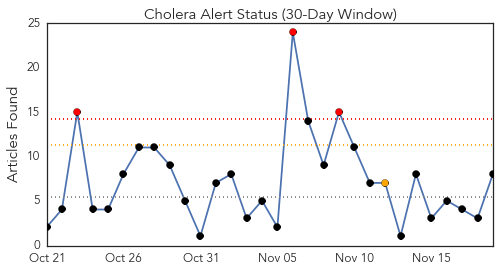
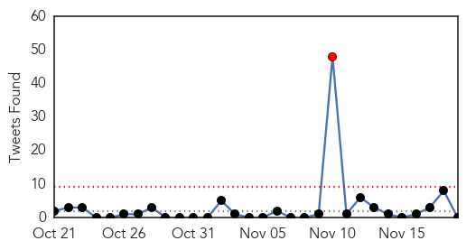
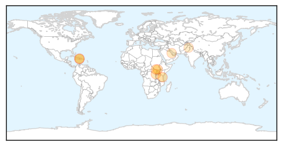
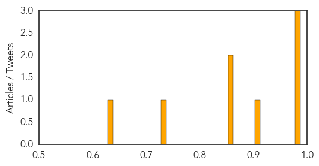

Toggle navigation
Early Warning
Daily Alerts
Cholera
Nov 19, 2015
Compare to:
-
Dengue Fever
Hemmorhagic Fever
Mold/Fungal Infection
Influenza
Meningitis
Pertussis / Whooping Cough
Middle East Respiratory Syndrome
Hepatitis
Chikungunya
Yellow Fever
Bubonic Plague
West Nile Virus
Swine Flu
Ebola
Measles
Unknown
Mumps
30 Day Trends
Web: 3
alerts
, 1
warnings
Twitter: 1
alerts
, 0
warnings
Top Articles:
0.995
Ignoring the plight of the poor in Haiti
0.995
Kilimanjaro steps up measures against cholera - United Republic of Tanzania
0.976
HAITIAN-TRUTH.ORG Proud to be Haiti's most informative NEWS site
0.913
How simple toilets and sanitation are saving lives in South Sudan
0.863
The Broadband Revolution is Just a Fiber Away
0.853
Médecins Sans Frontières (MSF) International
0.737
Bahrain free from cholera, reaffirms health ministry official
0.636
World Toilet Day: Public health at risk from poor hygiene, sanitation
Top Tweets:
No tweets found for Nov 19, 2015
Web/News Articles

Tweets

Article Locations

Article Confidences
